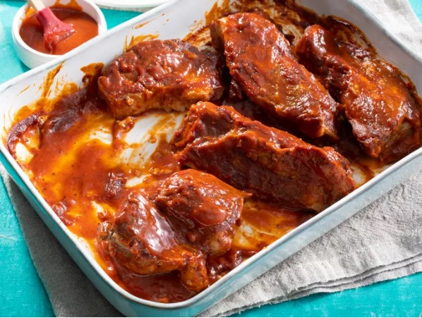

Uncle Tom's Most Famous Ribs

Looking for some super tender ribs recipe? Well, look no further!
Lean, country-stile pork ribs, this ribs recipe is boiled in seasoned water until tender, then finished up in oven under a blanket of you favorite barbecue sauce as they bake fo perfection. Give 'em a try!
Ingredients
- 2 ½ pounds country-style pork ribs
- 2 tbsp kosher salt
- 1 tbsp garlic powder
- 1 tsp ground black pepper
- 1 cup barbecue sauce
How to Make BBQ Ribs
- Boil the Ribs: Bring ribs, spices, and water to a boil and cook until ribs are tender
- Coat the Ribs w/ BBQ Sauce: Place the boiled ribs in a baking dish and cover with your favorite bbq sauce (either store-bought or homemade)
- Bake: Bake the ribs in preheated oven, covered with foil for 1 to 1 1/2 hours or until the internal temperature reaches 160º F
- Serve hot and enjoy!